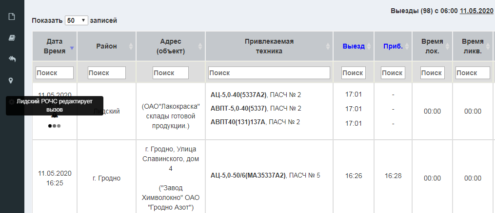
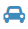
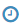
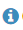
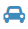
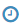
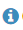

Одновременная работа с выездами (данный функционал работает в нескольких режимах)
- 1.
Отображение знака в столбце ID главной таблицы выездов. При наведении на иконку становится доступна информация о том, кто редактирует выезд в данный момент.
 - 2.
При нажатии на кнопку
 выезда (либо на ,  ,  ) в верхней части экрана выводится сообщение о том, что выезд в текущий момент времени редактируется другим пользователем (с указанием его имени).
выезда (либо на ,  ,  ) в верхней части экрана выводится сообщение о том, что выезд в текущий момент времени редактируется другим пользователем (с указанием его имени). - 3.
Для использования обоих режимов необходимо в настройках (левое меню -> Настройки -> Другие) установить соответствующее разрешение.
- 4.
Особенность использования данного режима заключается в том, что если пользователь нажал на кнопку
выезда и в течение 10 минут не нажал "сохранить выезд" - считается, что пользователь закончил редактировать выезд.